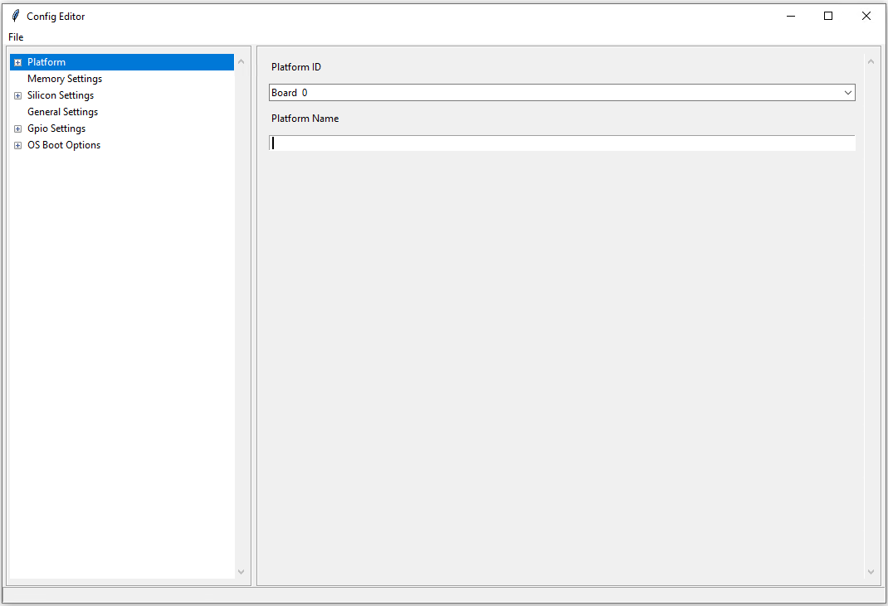
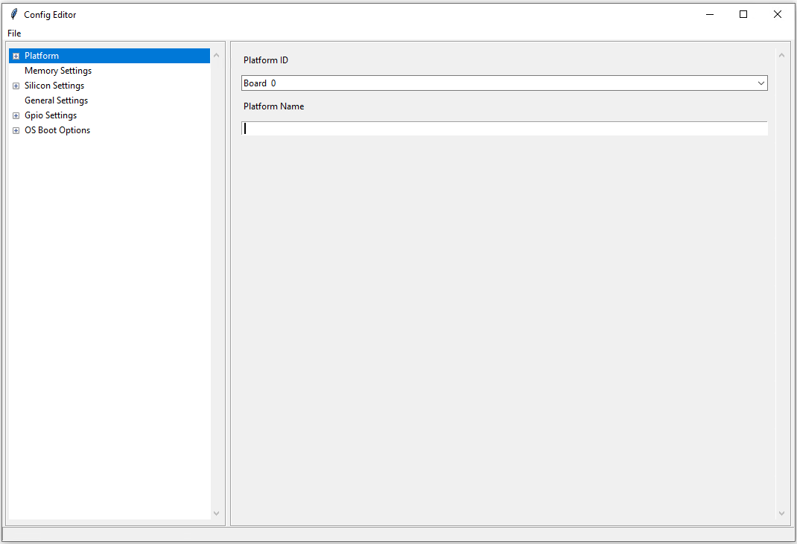

Configuration Tools¶
The configuration tools that are used during the configuration flow are CfgDataTool, GenCfgData, and CfgDataStitch. All are python-based scripts. These can be found at BootloaderCorePkgTools within the Slim Bootloader (SBL) source tree.
To edit configuration data, there is also a GUI tool called ConfigEditor.
CfgDataTool¶
CfgDataTool is pre-dominantly a parsing tool that is used to parse the input files such as YAML/DLT files and pre-process the configuration data prior to the binary generation. This tool parses the data based on the Platform ID that is set in each of the YAML/DLT files, calculates the mask/value pairs for each Configuration TAG, and populates the relevant data into the final binaries for each platform.
All of this is done as part of the ‘merge’ command that is described in detail later in this section. Even if only one board configuration is used, it still needs to go through the merge command process for the tool to pre-process the data correctly and generate the final configuration data blob.
CfgDataTool is also used to sign the merged configuration binary using a Private key provided by the user.
CfgDataTool mainly supports following commands: Merge, Sign, View, Extract, Replace.
Usage¶
python BootloaderCorePkg/Tools/CfgDataTool.py -h
CfgDataTool.py supports the following operations.
view: display config data
merge: merge config data
sign: sign custom/standalone config data
extract: extract a single config data tag to a file
replace: replace config data blob within an IFWI
export: export all external board config data
GenCfgData¶
GenCfgData generates header files for Configuration region, and associated binary files using the inputs as base YAML file and additional DLT files provided. From user’s perspective, this doesn’t have to be used externally.
CfgDataStitch¶
CfgDataStitch is used to patch CFGDATA blob into the existing final image.
CfgDataStitch.py -h provides the help information on the tool parameters.
ConfigEditor¶
This is a GUI interface that can be used by users who would like to change configuration settings directly from the interface without having to modify the SBL source.
This tool depends on Python GUI tool kit Tkinter. It runs on both Windows and Linux.
The user needs to load the YAML file along with DLT file for a specific board into the ConfigEditor, change the desired configuration values. Finally, generate a new configuration delta file or a config binary blob for the newly changed values to take effect. These will be the inputs to the merge tool or the stitch tool so that new config changes can be merged and stitched into the final configuration blob.
Running Configuration Editor:
python BootloaderCorePkg/Tools/ConfigEditor.py
 
